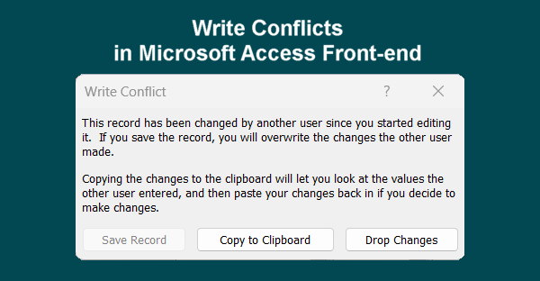

Write Conflicts in Microsoft Access Front-end
Write Conflict in a Microsoft Access front-end occurs when Access believes a record has changed between the time it was fetched and the time a user tries to save edits. When this happens, Access displays a dialogue box offering options to Save Record, Copy to Clipboard, or Drop Changes.
This issue commonly arises in multi-user environments or bound forms connected to external back-ends like SQL Server. The primary driver is often subtle schema mismatches—such as missing Primary Keys, bit fields that permit NULL values, or the absence of a TIMESTAMP (RowVersion) column. Without a RowVersion field, Access compares every column value to detect updates. If floating-point numbers or BIT fields mismatch during this check, Access falsely flags a concurrency conflict.

To resolve ‘write conflicts’ errors permanently:
Ensure every backend table features a properly defined Primary Key and a TIMESTAMP (RowVersion) column.
Set default values of 0 on all BIT fields and mark them as NOT NULL.
Replace bound forms with unbound VBA operations or dynamic pass-through queries, giving developers precise control over data transactions and ensuring consistent multi-user edits without disruptive pop-ups.
Refresh linked tables in the Access Front-end via the Linked Table Manager whenever schema changes occur on SQL Server, ensuring field metadata stays synchronized.
Call explicit Me.Dirty = False in VBA before running action queries (UPDATE/INSERT) against the same record to commit pending UI changes first.
Avoid binding a single form to multiple overlapping query sources or nested subforms that attempt to edit the exact same underlying record simultaneously.
Experiencing persistent write conflicts or database errors? DataCore Systems specializes in high-performance MS Access front-end stabilization, SQL Server optimizations, and robust VBA architectures.
Get in Touch